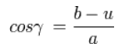

El teorema del coseno es una generalización del teorema de pitagoras en los triángulos rectángulos que se utiliza, normalmente, en trigonometría. El teorema relaciona un lado de un triángulo cualquiera con los otros dos y con el coseno del ángulo formado por estos dos lados:
Dado un triángulo ABC, siendo α , β, γ, los ángulos, y a, b, c, los lados respectivamente opuestos a estos ángulos entonces:

Por el teorema de Pitágoras:
Notemos que el Teorema de Cosenos es equivalente al Teorema de Pitágoras cuando el ángulo es recto. Por tanto sólo es necesario considerar los casos cuando c es adyacente a dos ángulos agudos y cuando c es adyacente a un ángulo agudo y un obtuso

Consideremos la figura adjunta. Por el teorema de Pitágoras, la longitud c es calculada así:

Pero, la longitud h también se calcula así:

Sumando ambas ecuaciones y luego simplificando obtenemos:

Por la definición de coseno, se tiene:
y por lo tanto:

Sustituimos el valor de u en la ecuación para C2, concluyendo que: